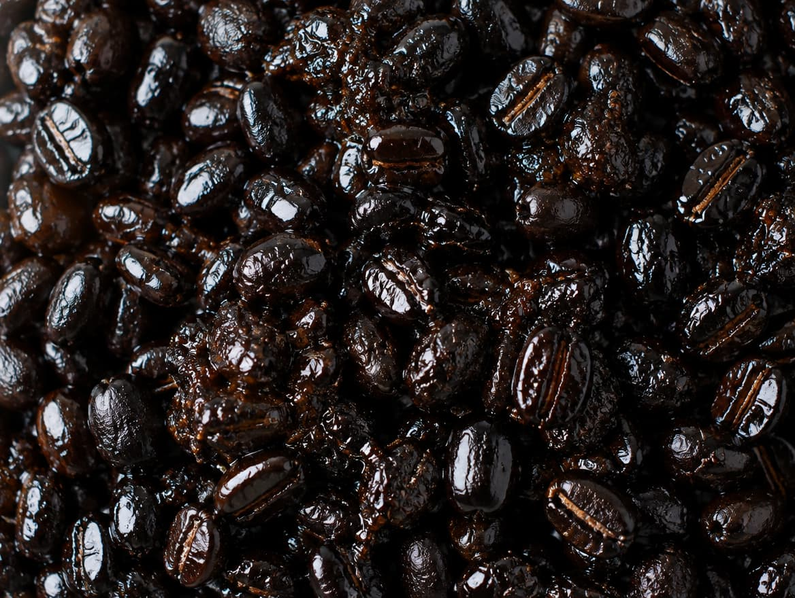
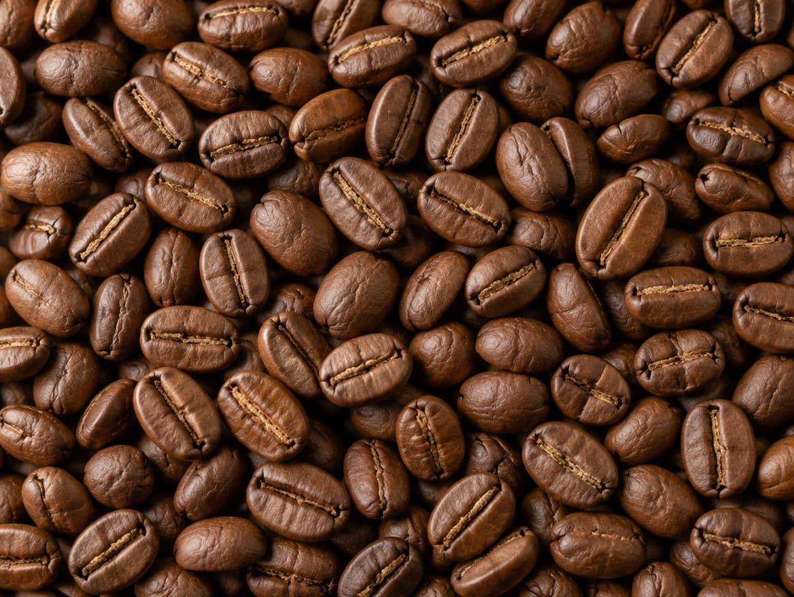
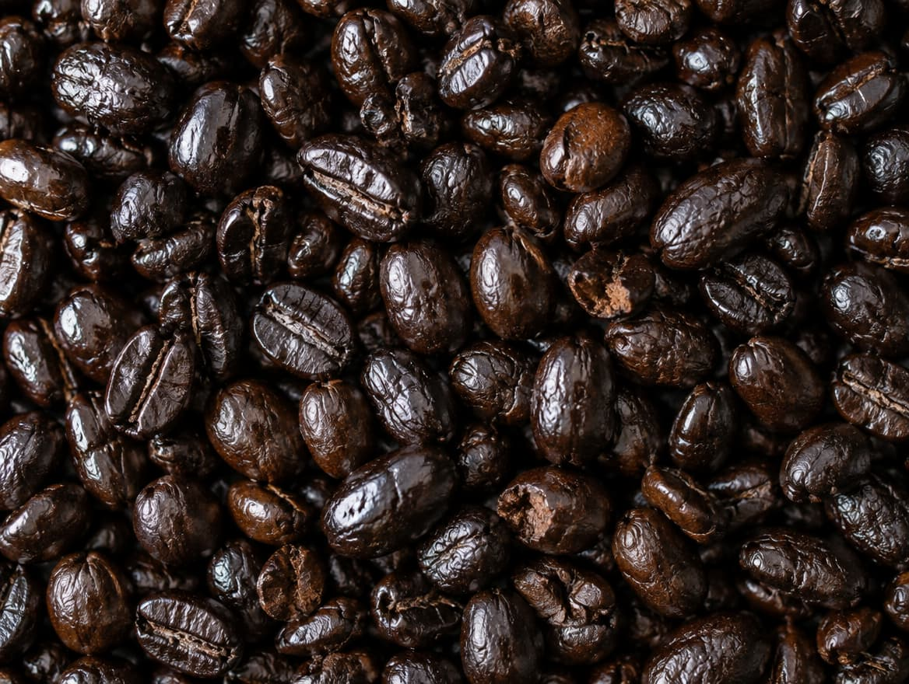
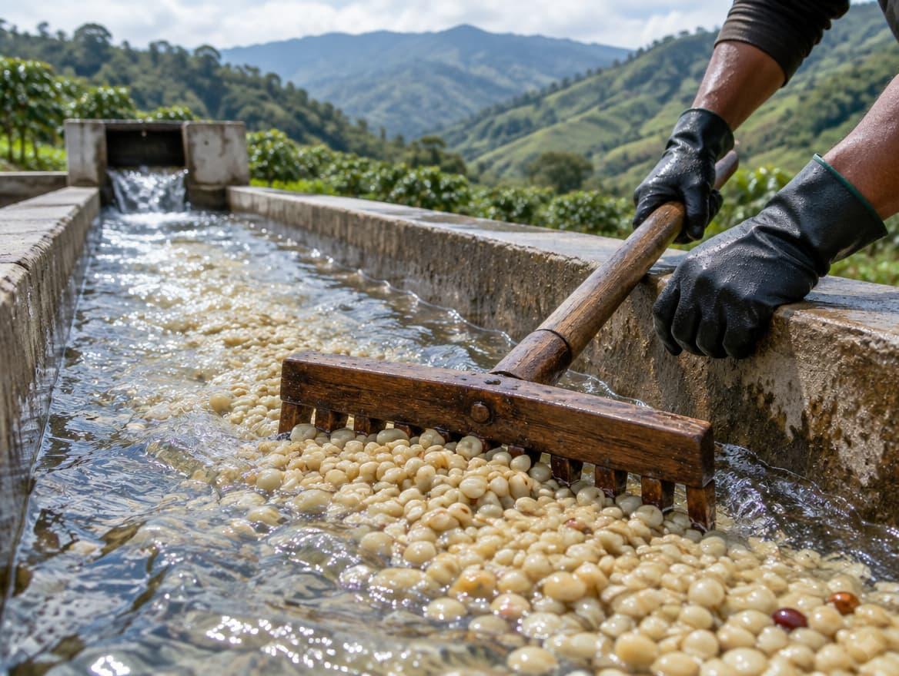
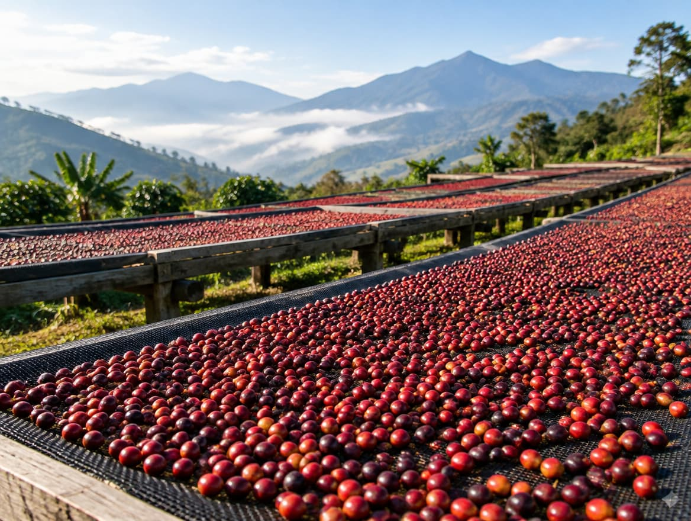
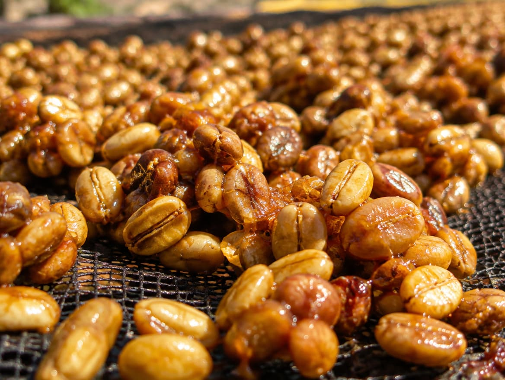
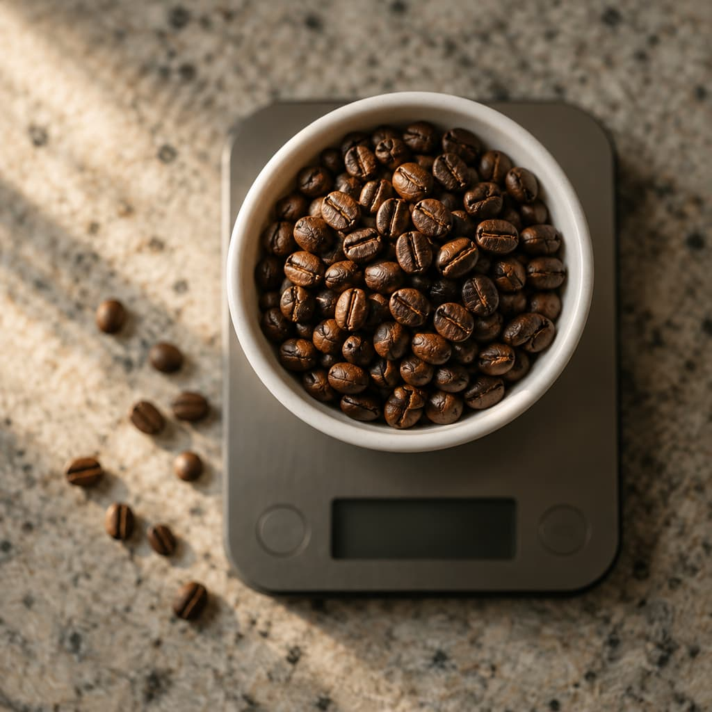
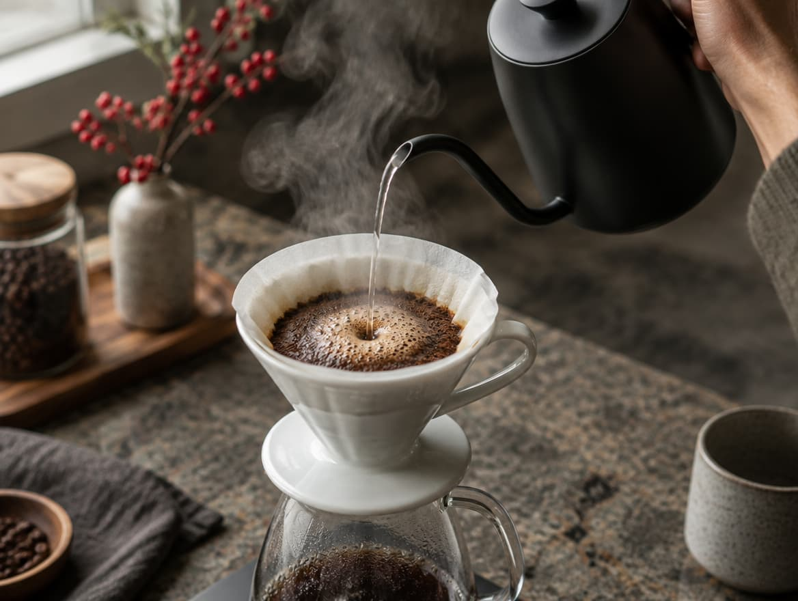

Especialidad
El grano habla por sí solo
- Origen
- Finca o cooperativa concreta
- Calidad
- 80 puntos o más en cata
- Tueste
- Reciente, a medida del grano
- Sabor
- Notas propias: fruta, flores, chocolate
- Productor
- A menudo negociado directamente con el productor
Inicio / Café de especialidad
Calidad medida, origen trazable y un tueste que respeta el grano. Todo lo que necesitas saber, explicado sin tecnicismos.
Definición
Tres claves lo definen. Elige una y compruébalo tú mismo.
1.Café que obtiene 80 puntos o más sobre 100 en la cata profesional de la Specialty Coffee Association (SCA).
Además, los defectos restan puntos: una taza con fallos baja de nota. Mueve el control y mira qué significa cada nota.
Escala clásica de 100 puntos. La SCA ha presentado un método nuevo, el CVA, pero esta escala sigue usándose mucho en el comercio del café.
/100
Muy bueno · ya es especialidad
Limpio, dulce y con un carácter reconocible.
2.Grano con origen trazable: se conoce la finca, la altitud, la variedad y el proceso.
Toca cada dato de la etiqueta y descubre qué te cuenta. Así sabrás leer cualquier bolsa.
Etiqueta de ejemplo. No corresponde a un lote real.
Dónde se cultivó. Cuanto más concreto, mejor trazabilidad.
3.Café tostado para mostrar su sabor propio, no para taparlo.
No confundir con torrefacto: café tostado con azúcar, muy habitual en España, que oscurece el grano y tapa su sabor.
Sabes quién lo cultivó, dónde y cómo. Es la base de la confianza y de un precio más justo en origen.
Catadores formados lo puntúan con un protocolo común. Solo a partir de 80 puntos se considera especialidad.
Se tuesta en lotes pequeños y se disfruta mejor en las semanas siguientes al tueste.
Ocho paradas en una sola línea. Así viaja el café antes de llegar a tu mesa.
Café cultivado en altura, en fincas con nombre propio.
Se recogen solo las cerezas maduras, muchas veces a mano.
Lavado, honey o natural: el método marca el sabor.
El grano viaja en sacos y se cata antes de comprarlo.
Un perfil a medida para cada origen, en lotes pequeños.
Justo antes de preparar, ajustada a cada método.
Receta, ratio y tiempo: espresso, V60, Chemex o AeroPress.
Aroma, acidez, dulzor y cuerpo. Fin del trayecto.
Mueve el control y mira cómo cambia el grano y su sabor según el punto de tueste.
Huele a hierba y a cereal.
Compara
Tres maneras de llegar a tu taza. Arrastra la foto y mira la diferencia en el grano.


Especialidad

Comercial
Torrefacto
Pasa el ratón por una fila para verla en los tres cafés a la vez.
Tendencias generales, no marcas concretas. Fotos generadas con IA.
Glosario
10 términos
 Origen
OrigenOrigen y proceso
País, región y finca donde se cultivó el café. Cuanto más concreto, mejor trazabilidad.
Origen y proceso
El tipo de planta de café. Cada variedad aporta un perfil distinto.

LavadoOrigen y proceso
Se retira la pulpa antes de secar el grano. Da tazas limpias y acidez brillante.

NaturalOrigen y proceso
El grano se seca dentro de la cereza. Más cuerpo y notas a fruta madura.

HoneyOrigen y proceso
Se retira la piel pero se deja parte del mucílago. Dulzor y equilibrio.
 Tueste
TuesteTueste y preparación
Calor que transforma el grano verde y desarrolla aroma y sabor. Cada origen pide su perfil.
Prueba el simulador de tueste →
RatioTueste y preparación
Relación entre café y agua. Por ejemplo, 1:16 son 16 g de agua por cada gramo de café.
Calcula tu ratio →
ExtracciónTueste y preparación
Cuánto sabor sacamos del café molido. Poca: sabe ácido. Demasiada: sabe amargo.
Ver métodos de preparación → Cata
CataCalidad
Evaluación profesional del café con un protocolo fijo para puntuar aroma, sabor, acidez y cuerpo.
Ver la escala de puntos →Calidad
Specialty Coffee Association, la asociación que define los estándares del café de especialidad.
Sin resultados. Prueba con otra palabra.